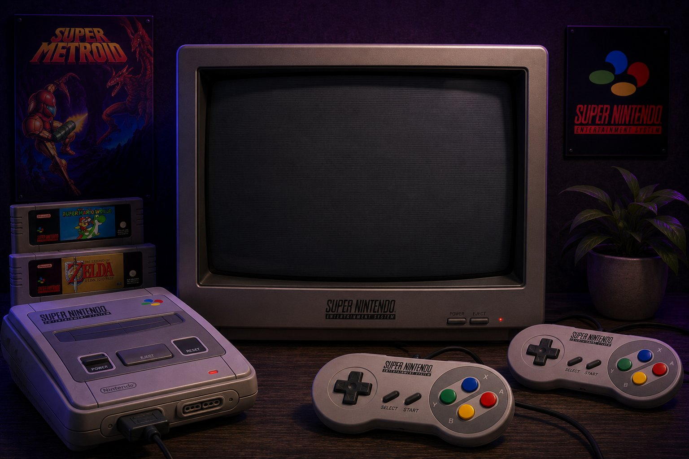

Charger un jeu
Chargez votre ROM .sfc ou .smc pour commencer à jouer sur la Super Nintendo.
Aucun jeu chargé
Déposer un fichier .sfc ou .smc
Ou cliquez pour explorer vos fichiersConfiguration Clavier
Contrôles clavier par défaut :
Croix directionnelle ZQSD
Bouton B / A M / K
Bouton Y / X J / I
Gâchettes L / R U / O
START / SELECT Entrée ↵ / Maj ⇧